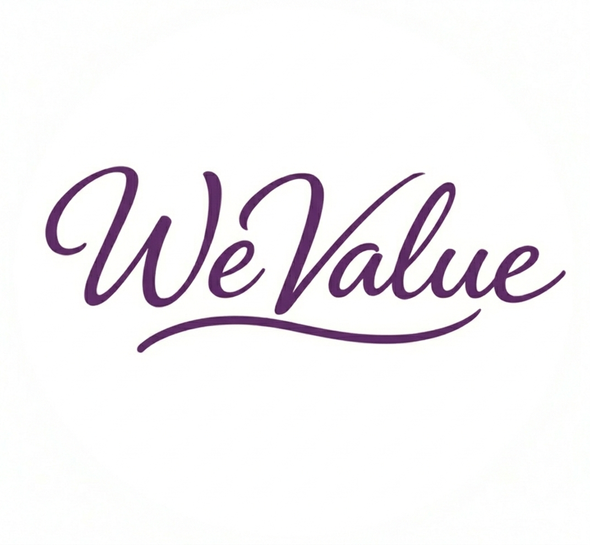

WeValue(v1.0407.3)
협업기반 휴머니즘 중심의 파트너스
dark_mode
forum
소통의 광장
expand_more
chat_bubble_outline
우리가치톡(Kakao 오픈채팅, 프로필 익명)
thumb_up_off_alt
칭찬 게시판
menu_book
업무의 기준
expand_more
description
우리가치(WeValue) 소통의 철학 A·C·D
play_circle_outline
1.PA.병동간호사 프로필 설정 및 데일리 프로토콜 게시방법.mp4
play_circle_outline
2.병동 A 단계.mp4
play_circle_outline
3.PA C단계-D단계.mp4
play_circle_outline
4.병동 C 단계.mp4
play_circle_outline
5.병동 done완료 단계(네 답변으로 종결).mp4
play_circle_outline
6.정보성보고 (병동) 절차 A-D-네(병동).mp4
play_circle_outline
7.사진보고절차 (사진 전송후에 답장기능으로 보고).mp4
play_circle_outline
8.PA A단계(회진후).mp4
play_circle_outline
9.병동 야간이음기록(주말 , 공휴일, 야간 기록 및 보고용도).mp4
play_circle_outline
10.응급상황은 선보고처치 후 기록남기기.mp4
file_download
우리가치(WeValue) 약속
code
[WeValue] 현장 협업 메신저 운영 가이드
menu_book
Q&A
ACD 입력양식 생성기
PC버전
모바일버전
Excel문서
play_circle_outline
3분 Vlog 게시판: 핵심 실무 교육 영상 모음
edit_note
공동 시뮬레이션
school
배움의 창구
expand_more
edit_note
온디맨드교육이란?
교육 요청
기기교육 요청
play_circle_outline
3분 Vlog 게시판: 핵심 실무 교육 영상 모음
edit_note
공동 시뮬레이션
leaderboard
분기별 지표 현황
expand_more
insights
루프 준수율 / 시간약속 준수율 현황
assignment
간담회 소식지(1분기)
assignment
간담회 소식지(2분기)
assignment
간담회 소식지(3분기)
assignment
회의록
[양식 다운로드]
quiz
설문
expand_more
rate_review
3월 설문
PA 협업 체계 사전 설문 참여
복사되었습니다!